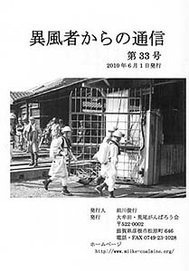
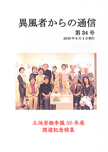
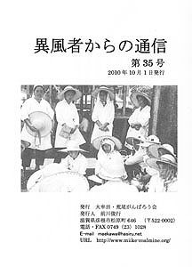
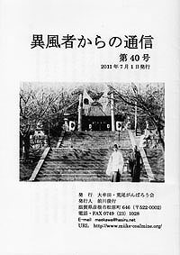
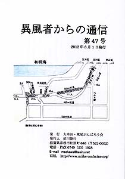
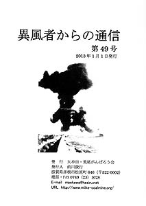
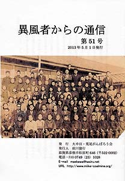
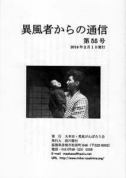

| 石牟礼道子さん「いま水俣を語る」 / 編集後記 |
| 三池炭鉱殉職者一覧 / 1960年、「その時」あなたは / 編集後記 |
|  |
| 三井三池三川鉱炭塵爆発犠牲者一覧 / 参考資料・三池炭鉱の職種 / 編集後記 |
|  |
| 「三池労働争議50年展」に寄せる声 / 編集後記 |
|  |
|
三池オルグの思い出 / オルグとして三池に学んだこと / 炭坑労働者の年表 / |
|
少年がみた三井三池労働争議 / 炭坑労働者の年表 / みいけ資料館−赤旗 |
|
フ・ナロード / 炭坑労働者の年表 / みいけ資料館−四山鉱 ZD運動ハンカチ |
| 労働歌「がんばろう」を歌う老婦人 / 炭坑労働者の年表 / 日韓野球史100年 / 編集後記 |
| 労働災害に対する社会福祉の視座−三池炭鉱三川鉱炭塵爆発事故被災者世帯の生活問題に着目して / 編集後記 |
|  |
| 家族の軌跡−戸籍が語る、ある朝鮮人坑夫の記録 / 炭坑労働者の年表 / 編集後記 |
| 戸籍が語る一家族の軌跡−楠元家の場合 / 炭坑労働者の年表 / 編集後記 |
| 戸籍が語る一家族の軌跡−もう一つのフルサト / 編集後記 |
| 韓国 ルーツの旅 / 水俣をさるく / 編集後記 |
| 夫の仇だけは取りたい / 編集後記 |
| 慰霊碑に刻まれたひとたち / みいけ資料館 / 炭坑労働者の年表 / 自主避難 / 編集後記 |
| 三池ＣＯの教訓（その1）/ 編集後記 |
|  |
| 三池ＣＯの教訓（その2） / 編集後記 |
| 三池ＣＯの教訓（その3） / 炭坑労働者の年表 / 編集後記 |
|  |
| 服部百代作品集 / 炭坑労働者の年表 / みいけ資料館 / 編集後記 |
| ラジオドキュメンタリー「地底の32時間」 / 炭じん大爆発から50年 / 編集後記 |
|  |
| 俺は三川鉱炭塵爆発事故の生き残り（聞き取り） / 炭坑労働者の年表 / みいけ資料館−炭塵爆発を見つめたカメラ / 編集後記 |
| 二度地獄を見た元炭鉱労働者の話 / 炭坑労働者の年表 / 編集後記 |
| 謎の鬼城繁太郎氏永世不忘碑 |
| 「三池炭鉱炭塵爆発50年」展でのアンケート / 第50回三池大災害抗議集会にて / 編集後記 |
|  |
| 炭塵爆発の記憶〜眞村さんの場合 / みいけ資料館 / 編集後記 |
| なぜ今こそ”三池”なのか / 三池ＣＯの教訓 / 11月9日の記憶 |
| モグラといわれて / コブシを突き上げろ / 名もなく去って行った者たち / 炭坑労働者の年表 / 目に浮かぶ「がんばろう」口ずさむ父の姿 / 編集後記 |
| チッソ水俣との闘い−関西訴訟元原告・坂本美代子さん / 編集後記 |
| 前川ミュージアムアンケート結果 / 語り・炭鉱離職者家族の１人として / 質疑応答 / 反響 / 返信 / 負の遺産こそ伝えたい / 編集後記 |
| はじめに / 三井三池闘争と警察 / 編集後記 |
| はじめに / 三池闘争モノ語り / 三池炭鉱炭塵爆発モノ語り / 三池炭鉱労働者モノ語り / 編集後記 |
 |
| はじめに / 前川ミュージアム・アンケート結果 / 手紙 / 炭鉱の記憶 / 返信 / 三池炭鉱モノ語り / 編集後記 |
| はじめに / 三池炭鉱モノ語り / 三池ＣＯ中毒患者・山崎辰秀さんのこと / 編集後記 |
| はじめに / 三池炭鉱モノ語り / 編集後記 |
| はじめに / 三池炭鉱モノ語り / 編集後記 |
| はじめに / とうちゃんたちの三池炭鉱専用鉄道 / 炭鉱労働者モノ語り / 編集後記 |
| はじめに / 明治赤池炭鉱の「労務月報」 / 三池って、ナニ / 炭鉱労働者モノ語り / 編集後記 |
| BACK NEXT |